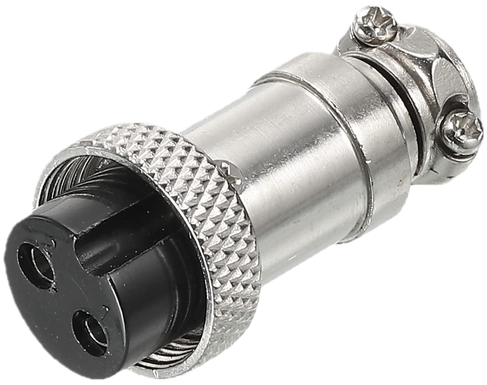

GX-16/2 Plug
Connector
A GX-16/2 female plug is used to connect an E-stop button to the Rosetta system. This plug is sometimes called an aviation connector.
Cable Sizing
The cable between the Rosetta system and your E-stop button should:
- Have 2 conductors within the cable
- Be stranded - this is more flexible than solid wire
- Be 22 AWG (gauge; 24 AWG is the minimum) - this is easily soldered to the GX-16 connector
- Be shielded, with the shield connected to ground at the Rosetta box end only - this will help isolate the signal from noise which could be encountered in adjacent cables (e.g., for stepper motors)
Wiring the Switch
| GX-16 Pin | Wire Color | Purpose |
| 1 | Red | Signal (to the Rosetta input) - do not connect to any power source |
| 2 | Black | GND (ground) |
E-Stop Button Notes
E-stop switches are wired as normally closed, and the circuit becomes open when the switch is triggered.
The E-stop button simply connects the two pins together when it is not pressed. The Rosetta box supplies the signal itself, so never connect either wire to a power supply.
The E-stop button plugs into the Base Box.
The use of such a switch must be configured on the Inputs, Outputs, and Sounds tab of the Rosetta Settings program. See E-Stop for how the button works together with the F1 key.